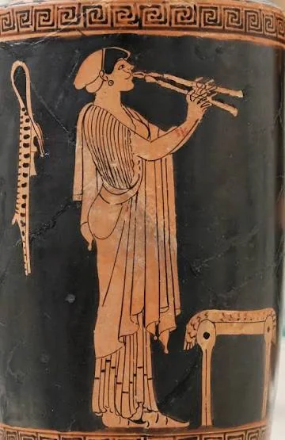

La música de Grecia y Roma
- Leé esta página entera.
- Respondé en voz alta las preguntas del final y anotá lo que te costó en ✎ Mis notas.
Objetivo: entender cómo sonaba y cómo se pensaba la música en Grecia y Roma, con una explicación de los modos griegos que no requiere saber leer una partitura.
Lo primero: Grecia pensó la música como matemática y como ética
Para los griegos la música no era solamente un arte: era una rama del conocimiento, emparentada con las matemáticas y la astronomía. Pitágoras (siglo VI a.C.) descubrió, según la tradición, que los intervalos musicales agradables al oído (lo que hoy llamamos octava, quinta, cuarta) corresponden a relaciones numéricas simples entre las longitudes de una cuerda: si una cuerda de cierto largo da una nota, una cuerda de la mitad de ese largo da la misma nota una octava más arriba (relación 2:1), y una cuerda de dos tercios de ese largo da una quinta (relación 3:2). Esto puede parecer un detalle técnico, pero fue una revolución: por primera vez alguien demostraba que la belleza de un sonido no era "gusto" subjetivo sino que tenía una explicación matemática exacta. Esa idea (que lo bello es proporción y número) va a influir en la filosofía, la arquitectura y el arte occidental durante más de dos mil años.
Además, los griegos creían que la música tenía un efecto directo sobre el carácter de una persona: a esto lo llamaban la doctrina del ethos musical. No era una metáfora poética, lo tomaban en serio: Platón, en su libro "La República", llega a proponer prohibir ciertos modos musicales en la educación de los futuros gobernantes porque "ablandan" el carácter, mientras que recomienda otros modos porque forman el coraje y la disciplina.
Los modos griegos: qué son, sin tecnicismos
Un "modo" es, explicado de la forma más simple posible, una receta de qué notas usar y cómo ordenarlas para construir una melodía, parecida a cómo una escala musical de hoy (la escala mayor que todo el mundo reconoce, "do-re-mi-fa-sol-la-si-do") te da un set de notas con las que armar una canción. Cada modo griego sonaba distinto porque tenía una distribución distinta de intervalos grandes y chicos entre sus notas, de forma parecida a cómo hoy una escala mayor suena "alegre" y una escala menor suena "triste" sin que nadie te lo tenga que explicar: el oído lo detecta solo.
Los modos principales eran el dorio, el frigio, el lidio (y sus variantes "hipo-" de cada uno, una octava más abajo). La asociación griega de carácter era aproximadamente así:
| Modo | Carácter que le atribuían los griegos |
|---|---|
| Dorio | severo, viril, disciplinado: el que Platón recomendaba para la educación |
| Frigio | apasionado, orgiástico, ligado al culto de Dioniso y al aulos |
| Lidio | lamentoso, afeminado según su criterio (muy marcado por el prejuicio de la época) |
Importante: lo que hoy llamamos "modo dorio" o "modo frigio" en teoría musical moderna (y que vas a usar cualquier guitarrista de jazz o de rock) no es exactamente lo mismo que el modo griego original: en la Edad Media, los teóricos reinterpretaron mal los nombres griegos al crear los modos eclesiásticos (lección 2.3), y esa reinterpretación errónea es la que llegó hasta hoy. Es una curiosidad histórica: usamos nombres griegos para escalas que, en rigor, los griegos no usaban con esa estructura exacta.
El rol de la música en la vida griega

La música griega no se escuchaba "sentado en silencio" como hoy en un auditorio: estaba integrada en la vida pública.
- El teatro: las tragedias y comedias griegas tenían coros cantados con acompañamiento de aulos, y la música era parte inseparable del texto, no un agregado.
- Los agones: competencias musicales en festivales religiosos, como los Juegos Píticos de Delfos, donde citaristas y cantantes competían por premios, igual que los atletas competían en los Juegos Olímpicos.
- La educación: aprender a tocar la lira y cantar poesía era parte obligatoria de la formación de un ciudadano griego libre, junto con la gimnasia y la retórica.
- El simposio: las reuniones sociales de la aristocracia griega (banquetes con vino y discusión filosófica) incluían música en vivo, a veces tocada por esclavas entrenadas para eso.
Roma: una cultura musical "importada"
A diferencia de Grecia, Roma no desarrolló una teoría musical propia de peso: adoptó los instrumentos y buena parte de las ideas griegas (a través de la conquista de Grecia en el siglo II a.C.), pero le dio un uso distinto, mucho más ligado al espectáculo público y al ejército que a la filosofía.
- El ejército: la buccina y el cornu (lección 1.2) organizaban la vida de la legión: señales de marcha, de ataque, de cambio de guardia.
- El circo y el anfiteatro: las carreras de carros y los combates de gladiadores tenían acompañamiento musical en vivo, con órganos hidráulicos (el hydraulis, un antecesor curioso del órgano de tubos que vas a ver en la Edad Media) y conjuntos de viento y percusión, parecido a cómo hoy un estadio de fútbol usa música para generar ambiente.
- El teatro romano: heredó las formas griegas pero con un tono más popular y menos solemne.
- La casa privada: la aristocracia romana contrataba músicos esclavos (muchos de origen griego) para entretener en las cenas, los famosos "convivia".
El filósofo romano Boecio (siglo V-VI d.C., ya en el límite entre la Antigüedad y la Edad Media) va a ser la bisagra fundamental entre el pensamiento musical griego y la Edad Media: él tradujo y sistematizó en latín las ideas griegas sobre música (incluida la de Pitágoras), y ese libro suyo, "De institutione musica", es el manual de teoría musical más influyente de los siguientes mil años en Europa, estudiado obligatoriamente en las universidades medievales.
Preguntas de repaso
- ¿Qué descubrió Pitágoras sobre los intervalos musicales y por qué fue tan importante?
- ¿Qué es la doctrina del ethos musical y qué ejemplo da Platón sobre ella?
- ¿Qué es un "modo" griego, explicado sin tecnicismos?
- ¿El modo dorio o frigio de hoy (el que usa un guitarrista de rock) es igual al modo griego original? Explicá por qué.
- ¿Qué diferencia principal hay entre el uso de la música en Grecia y en Roma?
- ¿Por qué es importante Boecio para la historia de la música, aunque no haya compuesto ninguna obra famosa?
Respuestas
- Descubrió que los intervalos musicales agradables al oído corresponden a relaciones numéricas simples entre longitudes de cuerda (una cuerda de la mitad de largo da la nota una octava más arriba, relación 2:1; dos tercios del largo dan una quinta, relación 3:2). Fue importante porque demostró, por primera vez, que la belleza sonora tiene una base matemática exacta y no es solo gusto subjetivo, lo que influyó en la filosofía y el arte occidentales durante siglos.
- Es la creencia griega de que la música influye directamente sobre el carácter de quien la escucha, no como metáfora sino como efecto real y medible. Platón, en "La República", propone prohibir ciertos modos musicales en la educación de los futuros gobernantes porque, según él, "ablandan" el carácter, y recomienda otros porque forman el coraje y la disciplina.
- Es una receta de qué notas usar y en qué orden para construir una melodía, de forma parecida a cómo una escala musical de hoy (como la escala mayor "do-re-mi-fa-sol-la-si-do") te da un conjunto de notas con el que armar una canción. Cada modo sonaba distinto porque tenía una distribución distinta de intervalos grandes y chicos.
- No es igual. En la Edad Media los teóricos reinterpretaron (de forma incorrecta) los nombres griegos al crear los modos eclesiásticos, y esa reinterpretación errónea es la que llegó hasta la teoría musical moderna. Por eso usamos nombres griegos para escalas que, en rigor, los griegos no construían de esa manera exacta.
- En Grecia la música estaba integrada a la filosofía, la educación cívica y la competencia artística formal (los agones). En Roma, en cambio, se usó sobre todo con fines prácticos y de espectáculo: señales militares, entretenimiento en el circo y el teatro, y entretenimiento privado en las cenas de la aristocracia, sin desarrollar una teoría musical propia de peso.
- Porque tradujo y sistematizó en latín, en su libro "De institutione musica", las ideas musicales griegas (incluida la de Pitágoras), y ese libro se convirtió en el manual de teoría musical más estudiado en las universidades medievales durante los siguientes mil años, siendo la bisagra que conectó el pensamiento musical de la Antigüedad con la Edad Media.